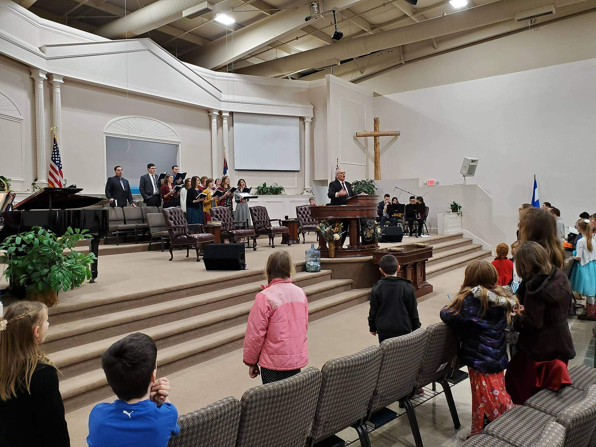
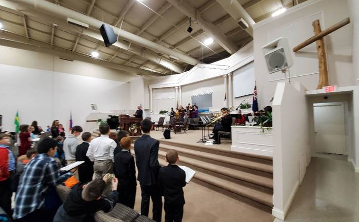
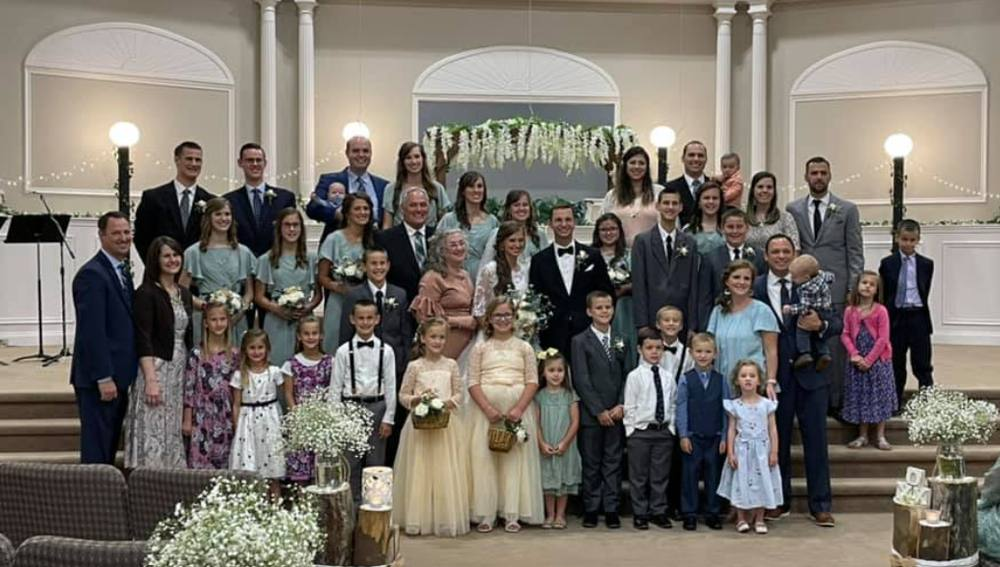
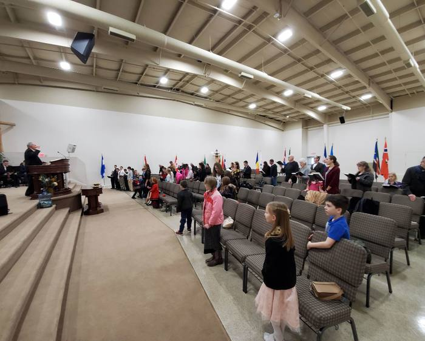
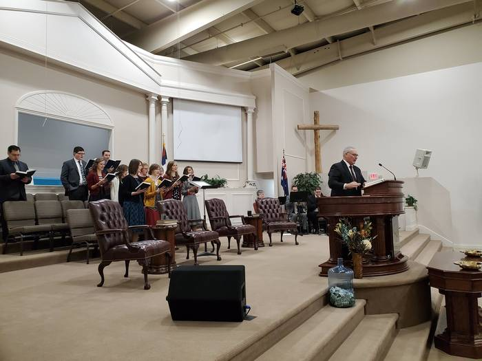

Children's Ministry
Bible classes on their level for ages 4 to 12, with games, songs, and the Patch the Pirate program on Wednesday nights.
Learn more
Marion, Indiana
We can't wait to meet you! We would love to see you, your family, and your friends this Sunday.
Lighthouse Baptist Church is an Independent, Fundamental Baptist church in Marion, Indiana. It is a place for your family to grow closer to Christ through the preaching of God's Word and music that will encourage you.
We have Bible classes for all ages on Sunday morning, a nursery for children age 2 and younger at every service, and toddler and children's church during the Sunday morning service.
What to Expect
Bible classes on their level for ages 4 to 12, with games, songs, and the Patch the Pirate program on Wednesday nights.
Learn moreActivities, Bible class, and services geared for teenagers aged 12 to 18.
Learn moreNeed a ride to church? Our bus ministry serves the Marion area. Call the church office to arrange a pickup.
Learn moreDr. Ronald A. Hon
Dr. Ronald Hon is the Pastor at Lighthouse Baptist Church. He graduated from Hyles-Anderson College and has served in Marion for over 25 years. He is married to Cindy Hon, and together they have 9 children, all of whom serve the Lord.
Pastor Hon has a vision to reach Grant County with the gospel and see lives changed. He preaches powerful sermons with a Biblical and practical emphasis.



You will find a family friendly place where the preaching of God's Word is the focus, with music that will encourage you. Services run a little over an hour.
Kids are welcome at all our services. Nurseries are staffed at every service, and there are Bible-centered classes for children three years old through sixth grade.
Wondering what to wear or where to go when you arrive? We have answers.
First Visit QuestionsThis feature is on the way. Check back soon, or reach out and we'll help.